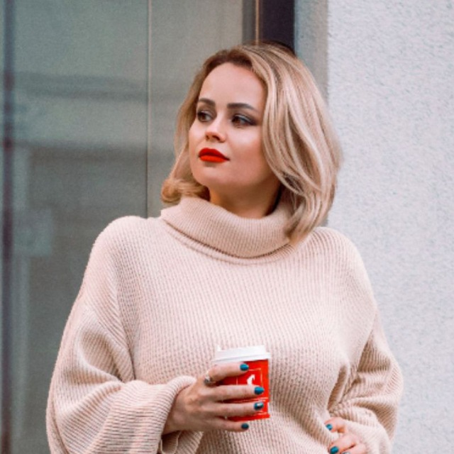

О нас
ISDS - это студия архитектурного дизайна с более чем 10-летним опытом работы в различных областях архитектуры и дизайна. JSDS разработала уникальный, оригинальный и качественный сервис по созданию проекта дома и/или интерьера для любого заказчика, в любой точке мира. Эффективность и доступность являются важными состовляющими нашей работы.
Соcтавление технического задания на разработку проекта
Создание архитектурного проекта здания (АР)
Создание дизайн-проекта интерьера
Галерея работ
Профиль
Юлия Шадрина • Архитектор
Я основала JSDS в 2012 году. Изначально я работала, как свободный художник и специализировалась на жилых проектах в Самаре, Москве и по всей России . Мои проекты включали в себя проектирование новых частных домов, жилых комплексов, а также реконструкцию и расширение существующих домов, с проработкой внутреннего пространства - дизайн интерьера. Параллельно я совершенствовалась в моих навыках, сотрудничая с крупными проектными и строительными организациями в России. Также приобретала опыт успешного проектирования в составе архитектурных компаний, в странах Европы.
Сегодня я возглавляю команду креативных и талантливых архитекторов. Вместе мы создаём качественные проекты, каждый раз совершенствуясь и вырастая над днем вчерашним.
В моей работе я придерживаюсь правила - чувствовать заказчика и воплощать для него лучшее из возможного. Я искала и нашла возможность успешного сотрудничества с моими заказчиками. В моей работе самым важным является ценность человека, для которого создается тот или иной объект. А результатом является грамотно выполненный проект. В проектировании я стремлюсь сочетать дизайн, эргономику, комфорт, удобство и простоту воплощения моих решений.
Дизайн зависит от контекста, окружающей среды и поставленной заказчиком задачи. Я стремлюсь вписать проектируемый объект в существующую среду и при этом создать экологичное, энергоэффективное и современное творение, превосходя ожидания моих заказчиков, в пределах заложенного бюджета.
СЕРВИСЫ
Я могу адаптировать свой подход к каждому проекту в соответствии с потребностями заказчика и в зависимости от желаемого уровня обслуживания. Как правило, я работаю поэтапно, согласовывая каждый этап с заказчиком. Я могу предоставить следующие услуги индивидуально или в рамках проекта от начала до завершения.
- Архитектурный дизайн строения
- Планировка участка
- Разработка планов
- Разработка внешнего вида здания
- Дизайн интерьера
- Разработка планов с размещением: мебели, санитарно-гигиенических приборов / техники / элементов освещения / розеток и т.д.
- Разработка детальных планов полов
- Разработка детальных планов потолков
- Расчет отделочных материалов
- Визуализация
ОБО МНЕ
Я училась в Самарской государственной Архитектурно-Строительной
Академии до получения диплома уровня “специалист” - 6 лет.
Защитила дипломную работу с отличием. После обучения я работала
в ряде небольших и крупных проектно-строительных организаций.
Я оттачивала опыт проектирования в рабочем кабинете, с
использованием современного программного обеспечения и курировала
возведение моих объектов на строительных площадках.
Я постоянно стремилась к самосовершенствованию используя любую
возможность проектирования в моей стране и за ее пределами.
И в итоге я вышла на международный уровень и могу гордиться
проектами, которые создавались для моих заказчиков.
Язык и границы перестали быть препятствием.
Архитектурный дизайн в современном мире создается в любой
точке земного шара. В моей работе основная цель это -
создание комфортного пространства, простого в возведении,
из доступных материалов, в сжатые сроки.
Не верите?
Проверьте! ;)
Контакты
tel. +7 987 944 02 96
telegram @Julia_Shadrina_Design
watsapp +7 987 944 02 96
e-mail jularch27@gmail.com